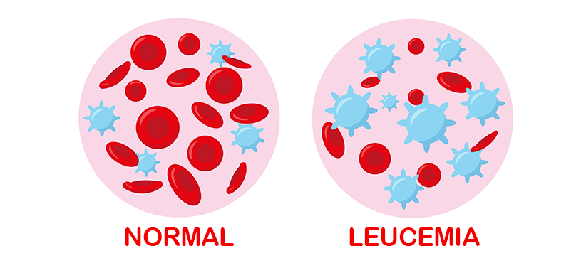

La leucemia es un cáncer de la sangre y de los órganos productores de células sanguíneas, principalmente la médula ósea, que es el tejido blando dentro de los huesos encargado de fabricar glóbulos rojos, glóbulos blancos y plaquetas. En esta enfermedad, la médula ósea produce una gran cantidad de glóbulos blancos anormales e inmaduros que no cumplen su función de defender al organismo contra infecciones. Estas células defectuosas se acumulan en la médula ósea y en la sangre, desplazando a las células normales y alterando el equilibrio natural del sistema hematológico.
Se considera una enfermedad maligna y sistémica, porque no se limita a un órgano específico, sino que afecta a todo el cuerpo a través de la circulación sanguínea. La leucemia se clasifica en diferentes tipos según la rapidez con la que progresa y el tipo de glóbulo blanco afectado. Puede ser aguda, cuando avanza rápidamente y produce células muy inmaduras, o crónica, cuando progresa de manera más lenta y las células anormales se asemejan más a las maduras. También puede ser linfocítica, si afecta a los linfocitos, o mieloide, si afecta a las células mieloides.
En términos generales, la leucemia es un cáncer hematológico caracterizado por la proliferación descontrolada de glóbulos blancos defectuosos, que impide el funcionamiento normal de la médula ósea y de la sangre. Al comprometer la producción equilibrada de las células necesarias para la vida, se convierte en una de las principales enfermedades malignas del sistema sanguíneo, ya que afecta directamente al mecanismo que sostiene la salud del organismo: la producción y regulación de las células sanguíneas.

REFERENCIAS BIBLIOGRAFICAS:
American Cancer Society. (2024). Leukemia. American Cancer Society. Recuperado de https://www.cancer.org/cancer/leukemia.html
MedlinePlus. (2024). Leucemia. Biblioteca Nacional de Medicina de EE. UU. Recuperado de https://medlineplus.gov/spanish/leukemia.html